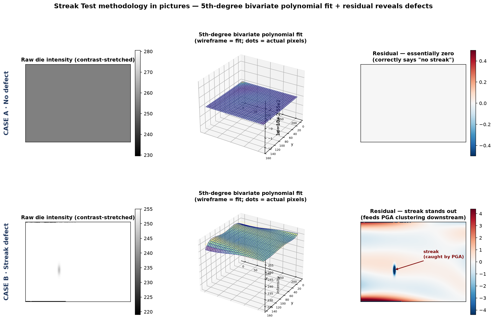

Case A: No defect — polynomial fits cleanly; residual essentially zero. Case B: Streak defect present — polynomial captures the dome; the streak stands out in the residual and feeds PGA clustering downstream. Real ON Semi AR0132 imaging die capture; illustrative streak synthesized to demonstrate what a real defect looks like in the residual.

Speaker cue for this slide (talk over it — audience follows along):
"This is the same methodology I described on the previous slide, applied to two real cases. Top row is the 'Not White Snake' image from the previous slide — the case that looked streak-like but wasn't. Raw die on the left, 5th-degree bivariate polynomial fit in the middle as the wireframe with actual pixel intensities as scatter dots on it, and the residual on the right — essentially zero. The algorithm correctly says 'no defect.'"
"Bottom row is an AR0132 imaging die with an illustrative streak added so you can see what a real defect looks like in the residual. Same polynomial fit captures the dome. The streak stands out cleanly on the right — that's the input to PGA clustering. Groups exceeding the SOD threshold would fail the die."
IMPORTANT DISCLAIMER (say it once, briefly):
"To be transparent — the raw die images are real production captures I archived from my time at ON Semi. The streak on the bottom right is synthetic — added on top of a real image to illustrate the pattern the residual reveals. I don't have ON Semi's original defect images with me, but this shows the shape of what the algorithm sees."
Q&A CUE: "Questions on how the polynomial captures the dome, or how the residual hands off to the clustering step?"